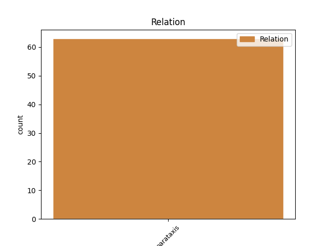

Distribution of features within this leaf

Agreement Rules sorted by frequency.
- When the dependent token is the parataxis(parataxis) of the head token, and the head token is VERB and the dependent token is AUX.
1 da _ _ _ _ 0 _ _ _
2 ne _ _ _ _ 0 _ _ _
3 bo biti VERB Va-f3s-n Mood=Ind|Number=Sing|Person=3|Polarity=Pos|Tense=Fut|VerbForm=Fin 0 _ _ _
4 samo _ _ _ _ 0 _ _ _
5 tebe _ _ _ _ 0 _ _ _
6 slišati _ _ _ _ 0 _ _ _
7 ne _ _ _ _ 0 _ _ _
8 celo _ _ _ _ 0 _ _ _
9 uro _ _ _ _ 0 _ _ _
10 bodo biti AUX Va-f3p-n Mood=Ind|Number=Plur|Person=3|Polarity=Pos|Tense=Fut|VerbForm=Fin 3 parataxis _ msd=Gp-ptm-n|word=bodo
11 mislili _ _ _ _ 0 _ _ _
12 da _ _ _ _ 0 _ _ _
13 si _ _ _ _ 0 _ _ _
14 ti _ _ _ _ 0 _ _ _
15 učiteljica _ _ _ _ 0 _ _ _
16 ker _ _ _ _ 0 _ _ _
17 toliko _ _ _ _ 0 _ _ _
18 govoriš _ _ _ _ 0 _ _ _
19 ne _ _ _ _ 0 _ _ _
20 [audience:laughter] _ _ _ _ 0 _ _ _
Disagree Examples:
1 [gap] _ _ _ _ 0 _ _ _
2 pogled _ _ _ _ 0 _ _ _
3 od _ _ _ _ 0 _ _ _
4 zgoraj _ _ _ _ 0 _ _ _
5 na _ _ _ _ 0 _ _ _
6 desni _ _ _ _ 0 _ _ _
7 strani _ _ _ _ 0 _ _ _
8 eee _ _ _ _ 0 _ _ _
9 imate imeti VERB Vmpr2p-n Aspect=Imp|Mood=Ind|Number=Plur|Person=2|Polarity=Pos|Tense=Pres|VerbForm=Fin 0 _ _ _
10 pogled _ _ _ _ 0 _ _ _
11 od _ _ _ _ 0 _ _ _
12 strani _ _ _ _ 0 _ _ _
13 tole _ _ _ _ 0 _ _ _
14 je biti AUX Va-r3s-n Mood=Ind|Number=Sing|Person=3|Polarity=Pos|Tense=Pres|VerbForm=Fin 9 parataxis _ msd=Gp-ste-n|word=je
15 pa _ _ _ _ 0 _ _ _
16 rdeči _ _ _ _ 0 _ _ _
17 premik _ _ _ _ 0 _ _ _
18 se _ _ _ _ 0 _ _ _
19 pravi _ _ _ _ 0 _ _ _
20 kolikokrat _ _ _ _ 0 _ _ _
21 je _ _ _ _ 0 _ _ _
22 bilo _ _ _ _ 0 _ _ _
23 vesolje _ _ _ _ 0 _ _ _
24 manjše _ _ _ _ 0 _ _ _
25 kot _ _ _ _ 0 _ _ _
26 je _ _ _ _ 0 _ _ _
27 danes _ _ _ _ 0 _ _ _
28 [gap] _ _ _ _ 0 _ _ _
29 od _ _ _ _ 0 _ _ _
30 nekih _ _ _ _ 0 _ _ _
31 velikih _ _ _ _ 0 _ _ _
32 številk _ _ _ _ 0 _ _ _
33 proti _ _ _ _ 0 _ _ _
34 nič _ _ _ _ 0 _ _ _
35 in _ _ _ _ 0 _ _ _
36 ničla _ _ _ _ 0 _ _ _
37 je _ _ _ _ 0 _ _ _
38 danes _ _ _ _ 0 _ _ _
39 ena _ _ _ _ 0 _ _ _
40 pomeni _ _ _ _ 0 _ _ _
41 sem _ _ _ _ 0 _ _ _
42 enkrat _ _ _ _ 0 _ _ _
43 manjši _ _ _ _ 0 _ _ _
44 in _ _ _ _ 0 _ _ _
45 približno _ _ _ _ 0 _ _ _
46 enkrat _ _ _ _ 0 _ _ _
47 mlajši _ _ _ _ 0 _ _ _
48 eee _ _ _ _ 0 _ _ _
49 nula _ _ _ _ 0 _ _ _
50 kot _ _ _ _ 0 _ _ _
51 rečeno _ _ _ _ 0 _ _ _
52 danes _ _ _ _ 0 _ _ _
1 [gap] _ _ _ _ 0 _ _ _
2 pogled _ _ _ _ 0 _ _ _
3 od _ _ _ _ 0 _ _ _
4 zgoraj _ _ _ _ 0 _ _ _
5 na _ _ _ _ 0 _ _ _
6 desni _ _ _ _ 0 _ _ _
7 strani _ _ _ _ 0 _ _ _
8 eee _ _ _ _ 0 _ _ _
9 imate _ _ _ _ 0 _ _ _
10 pogled _ _ _ _ 0 _ _ _
11 od _ _ _ _ 0 _ _ _
12 strani _ _ _ _ 0 _ _ _
13 tole _ _ _ _ 0 _ _ _
14 je _ _ _ _ 0 _ _ _
15 pa _ _ _ _ 0 _ _ _
16 rdeči _ _ _ _ 0 _ _ _
17 premik _ _ _ _ 0 _ _ _
18 se _ _ _ _ 0 _ _ _
19 pravi _ _ _ _ 0 _ _ _
20 kolikokrat _ _ _ _ 0 _ _ _
21 je _ _ _ _ 0 _ _ _
22 bilo _ _ _ _ 0 _ _ _
23 vesolje _ _ _ _ 0 _ _ _
24 manjše _ _ _ _ 0 _ _ _
25 kot _ _ _ _ 0 _ _ _
26 je _ _ _ _ 0 _ _ _
27 danes _ _ _ _ 0 _ _ _
28 [gap] _ _ _ _ 0 _ _ _
29 od _ _ _ _ 0 _ _ _
30 nekih _ _ _ _ 0 _ _ _
31 velikih _ _ _ _ 0 _ _ _
32 številk _ _ _ _ 0 _ _ _
33 proti _ _ _ _ 0 _ _ _
34 nič _ _ _ _ 0 _ _ _
35 in _ _ _ _ 0 _ _ _
36 ničla _ _ _ _ 0 _ _ _
37 je _ _ _ _ 0 _ _ _
38 danes _ _ _ _ 0 _ _ _
39 ena _ _ _ _ 0 _ _ _
40 pomeni pomeniti VERB Vmbr3s Mood=Ind|Number=Sing|Person=3|Tense=Pres|VerbForm=Fin 0 _ _ _
41 sem biti AUX Va-r1s-n Mood=Ind|Number=Sing|Person=1|Polarity=Pos|Tense=Pres|VerbForm=Fin 40 parataxis _ msd=Gp-spe-n|word=sm
42 enkrat _ _ _ _ 0 _ _ _
43 manjši _ _ _ _ 0 _ _ _
44 in _ _ _ _ 0 _ _ _
45 približno _ _ _ _ 0 _ _ _
46 enkrat _ _ _ _ 0 _ _ _
47 mlajši _ _ _ _ 0 _ _ _
48 eee _ _ _ _ 0 _ _ _
49 nula _ _ _ _ 0 _ _ _
50 kot _ _ _ _ 0 _ _ _
51 rečeno _ _ _ _ 0 _ _ _
52 danes _ _ _ _ 0 _ _ _
1 vidite videti VERB Vmbr2p Mood=Ind|Number=Plur|Person=2|Tense=Pres|VerbForm=Fin 0 _ _ _
2 da _ _ _ _ 0 _ _ _
3 so _ _ _ _ 0 _ _ _
4 se _ _ _ _ 0 _ _ _
5 stvari _ _ _ _ 0 _ _ _
6 nekako _ _ _ _ 0 _ _ _
7 zgostile _ _ _ _ 0 _ _ _
8 zgostile _ _ _ _ 0 _ _ _
9 so biti AUX Va-r3p-n Mood=Ind|Number=Plur|Person=3|Polarity=Pos|Tense=Pres|VerbForm=Fin 1 parataxis _ msd=Gp-stm-n|word=so
10 se _ _ _ _ 0 _ _ _
11 pa _ _ _ _ 0 _ _ _
12 relativno _ _ _ _ 0 _ _ _
13 nedavno _ _ _ _ 0 _ _ _
14 se _ _ _ _ 0 _ _ _
15 pravi _ _ _ _ 0 _ _ _
16 kar _ _ _ _ 0 _ _ _
17 dolgo _ _ _ _ 0 _ _ _
18 časa _ _ _ _ 0 _ _ _
19 v _ _ _ _ 0 _ _ _
20 temle _ _ _ _ 0 _ _ _
21 vesolju _ _ _ _ 0 _ _ _
22 v _ _ _ _ 0 _ _ _
23 tej _ _ _ _ 0 _ _ _
24 naši _ _ _ _ 0 _ _ _
25 okolici _ _ _ _ 0 _ _ _
26 naše _ _ _ _ 0 _ _ _
27 galaksije _ _ _ _ 0 _ _ _
28 je _ _ _ _ 0 _ _ _
29 bilo _ _ _ _ 0 _ _ _
30 zelo _ _ _ _ 0 _ _ _
31 tako _ _ _ _ 0 _ _ _
32 živahno _ _ _ _ 0 _ _ _
33 življenje _ _ _ _ 0 _ _ _
34 veliko _ _ _ _ 0 _ _ _
35 stvari _ _ _ _ 0 _ _ _
36 je _ _ _ _ 0 _ _ _
37 noter _ _ _ _ 0 _ _ _
38 padlo _ _ _ _ 0 _ _ _
39 veliko _ _ _ _ 0 _ _ _
40 stvari _ _ _ _ 0 _ _ _
41 je _ _ _ _ 0 _ _ _
42 ven _ _ _ _ 0 _ _ _
43 špricnilo _ _ _ _ 0 _ _ _
44 veliko _ _ _ _ 0 _ _ _
45 je _ _ _ _ 0 _ _ _
46 bilo _ _ _ _ 0 _ _ _
47 tega _ _ _ _ 0 _ _ _
48 da _ _ _ _ 0 _ _ _
49 je _ _ _ _ 0 _ _ _
50 majhna _ _ _ _ 0 _ _ _
51 galaksija _ _ _ _ 0 _ _ _
52 ena _ _ _ _ 0 _ _ _
53 galaksija _ _ _ _ 0 _ _ _
54 pojedla _ _ _ _ 0 _ _ _
55 drugo _ _ _ _ 0 _ _ _
1 no _ _ _ _ 0 _ _ _
2 povej povedati VERB Vmem2s Aspect=Perf|Mood=Imp|Number=Sing|Person=2|VerbForm=Fin 0 _ _ _
3 kako _ _ _ _ 0 _ _ _
4 sta biti AUX Va-r3d-n Mood=Ind|Number=Dual|Person=3|Polarity=Pos|Tense=Pres|VerbForm=Fin 2 parataxis _ msd=Gp-std-n|word=sta
5 se _ _ _ _ 0 _ _ _
6 še _ _ _ _ 0 _ _ _
7 kaj _ _ _ _ 0 _ _ _
8 imela _ _ _ _ 0 _ _ _
1 znaš znati VERB Vmpr2s Aspect=Imp|Mood=Ind|Number=Sing|Person=2|Tense=Pres|VerbForm=Fin 0 _ _ _
2 kaj _ _ _ _ 0 _ _ _
3 to _ _ _ _ 0 _ _ _
4 je biti AUX Va-r3s-n Mood=Ind|Number=Sing|Person=3|Polarity=Pos|Tense=Pres|VerbForm=Fin 1 parataxis _ msd=Gp-ste-n|word=je
5 bilo _ _ _ _ 0 _ _ _
6 oni _ _ _ _ 0 _ _ _
7 dan _ _ _ _ 0 _ _ _
8 noben _ _ _ _ 0 _ _ _
9 ni _ _ _ _ 0 _ _ _
10 smel _ _ _ _ 0 _ _ _
11 biti _ _ _ _ 0 _ _ _
12 frej _ _ _ _ 0 _ _ _